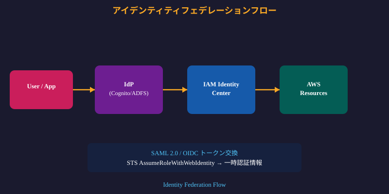
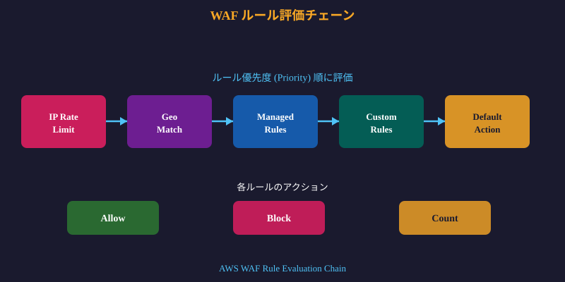
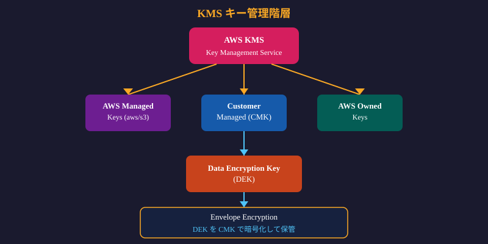

SCS-C02は6ドメイン・170問—対策の優先度を正確に把握せよ

GuardDutyが機械学習で未知の脅威を24時間検知する

UnauthorizedAccess:EC2/SSHBruteForce
Backdoor:EC2/C&CActivity.B

UnauthorizedAccess:IAMUser/ConsoleLoginSuccess.B
PrivilegeEscalation:IAMUser/AnomalousBehavior
Policy:S3/BucketBlockPublicAccessDisabled
Security Hubが全サービスの脅威を単一画面で一元管理
DetectiveがGuardDuty/CloudTrailを統合し侵害調査を自動化する
初動72時間の対応品質が被害範囲と復旧コストを左右する
IAM設計の誤りが最多のAWSセキュリティ侵害原因
UnauthorizedAccess:IAMUser/InstanceCredentialExfiltration
UpdateAccessKey --status Inactive
GuardDuty+Security Hub+Detective+EventBridge Lambdaの4ツール統合がDomain1の核心
CloudTrailなしにはインシデント調査の証跡が消滅する
ApiCallRateInsight
ApiErrorRateInsight
メトリクスフィルターとアラームが異常を即座にトリガーする
パターンマッチングフィルターが重要イベントを見落とさない
{ $.userIdentity.type = "Root" && $.userIdentity.invokedBy NOT EXISTS }
{ $.eventName = "ConsoleLogin" && $.additionalEventData.MFAUsed = "No" }
{ $.eventName = "DeleteGroupPolicy" || $.eventName = "PutGroupPolicy" }
{ $.eventName = "AuthorizeSecurityGroupIngress" }
VPC設計の初期誤りが後続の全修正コストを膨らませる
- SELECT srcaddr, COUNT(*) as attempts --- <!-- _class: fit-76 --> # VPC Flow Logs: 分析クエリ例（2/2） > *VPC設計の初期誤りが後続の全修正コストを膨らませる*  - AND dstport = 22 - GROUP BY srcaddr - ORDER BY attempts DESC - LIMIT 10; --- # VPC Flow Logs: 分析クエリ例（コード例）  --- # VPC Flow Logs: 分析クエリ例（コード例）（コード例） ```sql SELECT srcaddr, COUNT(*) as attempts FROM vpc_flow_logs WHERE action = 'REJECT' AND dstport = 22 GROUP BY srcaddr ORDER BY attempts DESC LIMIT 10;
SQLでCloudTrailを分析しインシデント調査コストを削減する
EventBridgeルールがセキュリティイベントへの自動応答を実現する
OpenSearchが大規模ログのリアルタイム検索と可視化を提供する
AWS Configが設定ドリフトを即座に検知し準拠を維持する
s3-bucket-public-read-prohibited
CloudTrailの組織証跡+CloudWatchメトリクスフィルター+Athena分析がDomain2の重点3点
SGはステートフル・NACLはステートレス—二層の役割を理解する
WAFマネージドルールがOWASP Top10を自動でブロック
Shield AdvancedがL3-L7の全DDoS攻撃を自動緩和する
AWS Network FirewallがVPC境界でL3-L7の全検査を実施する
Inspectorの継続スキャンがパッチ未適用を即座に可視化
SSMがSSH不要のセキュアなEC2アクセスと構成管理を実現する
CIS Benchmarkに基づくハードニングが既知攻撃の大半を遮断する
HttpTokens=required
イメージスキャンとランタイム保護がコンテナ攻撃を二段で防ぐ
privileged: false
readOnlyRootFilesystem: true
Firewall ManagerがOrganizations全体のWAF/SG設定を一元
DNS Firewallが悪意あるドメインへの通信を発信元で遮断する
SG(ステートフル/許可のみ)とNACL(ステートレス/許可+拒否)の違いがDomain3の最重要概念
最小権限ポリシーが侵害時の爆発半径を最小化する
境界設定が開発者への権限委譲を安全なレンジ内に制限する
SCPがOU単位でAWSサービス利用を強制制限する最強のガードレール
SCPの実践パターンが組織全体の防御ベースラインを保証する
- { - "Effect": "Deny", --- <!-- _class: fit-94 --> # SCP: 実践パターン（2/2） > *SCPの実践パターンが組織全体の防御ベースラインを保証する*  - "guardduty:DisassociateFromMasterAccount" - ], - "Resource": "*" - } --- # SCP: 実践パターン（コード例）  --- # SCP: 実践パターン（コード例）（コード例） ```json { "Effect": "Deny", "Action": [ "guardduty:DeleteDetector", "guardduty:DisassociateFromMasterAccount" ], "Resource": "*" }
AssumeRoleの信頼ポリシー設計がアカウント間の安全を決める
aws:SourceAccount
aws:SourceArn
タグベースABACが動的なリソース増減に対応した認可を実現する
Project=Alpha
--- <!-- _class: fit-70 --> # ABAC (属性ベースアクセス制御)（2/2） > *タグベースABACが動的なリソース増減に対応した認可を実現する* - {"Condition": {"StringEquals": { - "aws:ResourceTag/Project": "${aws:PrincipalTag/Project}" - }}}
aws:MultiFactorAuthPresent
外部IDとconditionキーが混乱した代理人攻撃を防ぐ唯一の手段
--- <!-- _class: fit-82 --> # 混乱した代理人問題 (Confused Deputy)（2/2） > *外部IDとconditionキーが混乱した代理人攻撃を防ぐ唯一の手段* - {"Condition": {"StringEquals": { - "aws:SourceAccount": "123456789012" - }}}
Domain4のSCP+Permission Boundaryの組み合わせ問題と評価ロジックが試験最頻出テーマ
顧客管理CMKがデータ主権と監査証跡を両立させる
aws/s3
GenerateDataKey
aws:SecureTransport: false
S3パブリックブロックとバケットポリシーが漏洩の最終防壁
ACMが証明書のプロビジョニングと自動更新を完全に自動化する
Secrets Managerが認証情報の自動ローテーションとアクセス制御を提供
MacieがS3内の個人情報を機械学習で自動分類・アラート
CloudFront+WAFがオリジン保護とDDoS緩和を同時に実現する
CloudHSMが専有ハードウェアで規制要件の最高水準を満たす
KMS(エンベロープ暗号化/自動ローテーション)とS3(Object Lock/SSE種別)がDomain5の核心
OU設計とSCP/SCPの組み合わせがガバナンスの骨格を形成する
Control Towerがランディングゾーンのベストプラクティスを自動適用する
Audit Managerが継続的な証拠収集でコンプライアンス準備を自動化する
セキュリティの柱の7設計原則が設計の抜け漏れを系統的に防ぐ
IaCのセキュリティチェック自動化がデプロイ前の脆弱性を排除する
cdk-nag
checkov
tfsec
コストアラームが予期しないリソース作成=侵害の早期指標になる
外部統合のスコープ最小化と監査がサプライチェーンリスクを制御する
Organizations委任管理者+Control Towerガードレール+Conformance Pack展開がDomain6の重点
IAMポリシー評価・GuardDuty自動対応・KMSエンベロープ暗号化が合格最優先の3テーマ
VPCエンドポイント種別・Object Lock・CloudTrail検証・SCPの4つが追加の必須暗記項目
AWS公式ドキュメントと試験ガイドがSCS-C02合格への最短ルートを示す
ハンズオン演習と公式模擬試験でSCS-C02の実践力を完成させる
AWS Certified Security - Specialty (SCS-C02) の試験対策スライド。6つのドメインを体系的に解説する。
SCS-C02は2023年7月にリリース。前バージョン(SCS-C01)から大幅刷新。
Domain 1は脅威検知と対応の自動化が中心。GuardDutyとSecurity Hubの連携が頻出。
全92スライドで6ドメインを完全網羅。試験合格のためにハンズオンも忘れずに。